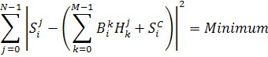
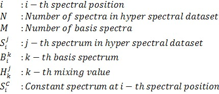

逆基分析的思想是：如果仅知道属于各组分的光谱图像（分布图），则从高光谱数据集中计算出基光谱和常数光谱。
逆基分析基于基本方程，该方程在文章 光谱叠加（数学）中有详细解释。

需要对每个光谱位置分别求解以下方程。


另请参阅
备注
选择正确的图像
与基分析类似，需要一组完整的图像来描述高光谱数据集中的所有组分。此外，每张图像必须只包含一种组分的无背景信号，以获得具有物理意义的光谱。
常数光谱
如果常数背景光谱是平坦的且无需拟合，用户可设置其偏移值。
基光谱重建
在某些情况下，可能仅从光谱的很小部分就能获得良好的图像，特别是在使用非负矩阵分解时。在这种情况下，逆基分析可用于在整个光谱范围内重建基光谱。